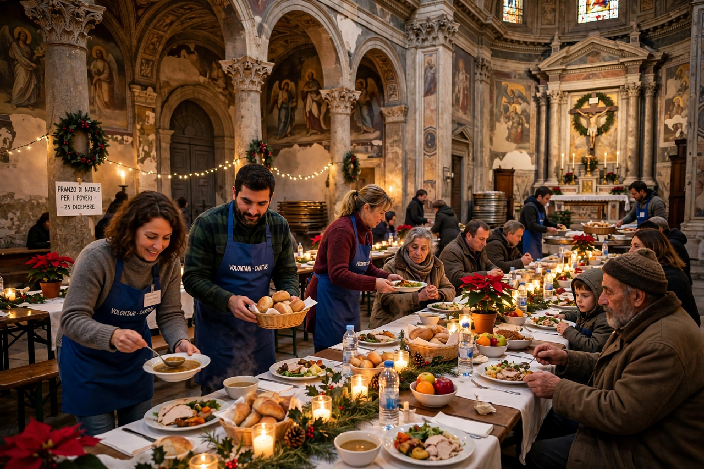

The Community of Sant'Egidio (Italian: Comunità di Sant'Egidio) is a Catholic lay movement and public association of the faithful, founded in Rome in 1968 by Andrea Riccardi and fellow students. Known for its service to the poor, its interreligious dialogue, and its "parallel diplomacy" in peace mediation — most famously the negotiations that ended the Mozambican Civil War in 1992 — it now counts tens of thousands of members in more than seventy countries. Its headquarters are in the Roman district of Trastevere, around the church of Sant'Egidio from which it takes its name.
| Community of Sant'Egidio | |
| Founded | 7 February 1968, Rome, Italy |
|---|---|
| Founder | Andrea Riccardi |
| Type | Catholic lay movement; NGO |
| Headquarters | Piazza di Sant'Egidio, Trastevere, Rome |
| Focus | Service to the poor; peace mediation; interfaith dialogue; abolition of the death penalty |

Sant'Egidio's Christmas lunch for the poor and homeless, held since 1982.
Riccardi, then a seventeen-year-old schoolboy, gathered friends in the wake of the Second Vatican Council and the upheavals of 1968 around three commitments: prayer, service to the poor, and friendship. The community organised schools of peace for children in Rome's poor outskirts, visited the elderly and the homeless, and in 1982 began its annual Christmas lunch for the poor, now held in dozens of cities. In 1986 it took up John Paul II's interreligious meeting at Assisi, organising annual "Prayer for Peace" gatherings of world religious leaders "in the spirit of Assisi".
Sant'Egidio's most celebrated achievement was mediating the end of the Mozambican Civil War. From 1990 to 1992, at its Trastevere headquarters, its mediators — including Riccardi, Matteo Zuppi, and Bishop Jaime Gonçalves of Beira — hosted twelve rounds of talks between the FRELIMO government and Afonso Dhlakama's RENAMO, culminating in the Rome General Peace Accords of 4 October 1992. The community has since mediated or facilitated dialogue in Algeria, Guatemala, Kosovo, Liberia, the Casamance, the Central African Republic and South Sudan, developing a model of patient, relationship-based "weak" diplomacy by a non-state actor.
The community runs the DREAM programme (Drug Resource Enhancement against AIDS and Malnutrition), which has provided antiretroviral treatment to hundreds of thousands of patients in Africa; campaigns worldwide for abolition of the death penalty, collecting millions of signatures and promoting the annual Cities for Life illuminations; organises humanitarian corridors that, since 2016, have brought thousands of refugees legally and safely to Europe; and serves the homeless, elderly, Roma communities and prisoners in the cities where it is present.